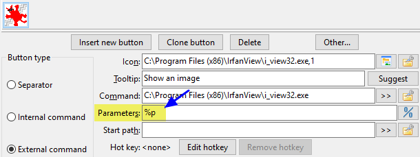

Variablen helfen uns beim Konfigurieren der Schaltflächen der Werkzeugleiste sowie beim Festlegen von Aktionen für Dateizuordnungen und Tastenkürzel.
Wir verwenden sie im Wesentlichen dann, wenn einem Befehl ein Parameter übergeben werden soll, der von den aktuell ausgewählten Dateien, dem Verzeichnis, in dem wir uns befinden, und anderem abhängt, das mit dem Kontext dessen zusammenhängt, was wir in den Panels anzeigen.
Hier ein einfaches Beispiel. Jemand hat eine Schaltfläche konfiguriert, die IrfanView startet und als Parameter die Variable %p verwendet.

Wenn die Person auf diese Schaltfläche klickt, wird IrfanView gestartet und die Variable %p durch die aktuell ausgewählte Datei im aktiven Panel ersetzt.
Darum geht es bei den Variablen, die auf dieser Seite beschrieben werden.
Wie Sie sehen werden, beginnen die meisten mit dem Prozentzeichen %.
Hinweis: Bei Variablen und Suffixen wird zwischen Groß- und Kleinschreibung unterschieden!
Das sind die grundlegenden Variablen, die sich verwenden lassen und die mit der aktuellen Auswahl zusammenhängen.
Standardmäßig werden Variablenwerte, die Leerzeichen und/oder Sonderzeichen enthalten, automatisch maskiert: Der Wert wird in doppelte Anführungszeichen gesetzt (unter Windows), oder solchen Zeichen wird „\“ vorangestellt (unter Unix-ähnlichen Systemen). Wenn Sie sie ohne Anführungszeichen benötigen, siehe den Abschnitt Anführungszeichen im Ergebnis oder nicht.
Für jedes Beispiel wird angenommen, dass wir auf die Datei C:\Users\UserName\Desktop\comment.png zeigen.
| Grundlegende Variablen | |
|---|---|
| Variablen | Bedeutung |
%p |
Vollständiger Dateiname, Pfad + DateinameExample: %p = "C:\Users\UserName\Desktop\comment.png" |
%f |
Nur der Dateiname, einschließlich ErweiterungExample: %f = "comment.png" |
%d |
Nur der Pfad, ohne abschließendes VerzeichnistrennzeichenExample: %d = "C:\Users\UserName\Desktop" |
%z |
Name des letzten Verzeichnisses im PfadExample: %z = "Desktop" |
%o |
Nur der Dateiname ohne ErweiterungExample: %o = "comment" |
%e |
Nur die Erweiterung, ohne den PunktExample: %e = "png" |
%v |
Relativer Dateiname, bezogen auf das aktuell aktive Verzeichnis Das ist zum Beispiel relevant, wenn Sie den internen Befehl cm_FlatView aufgerufen haben. Wenn wir eine flache Ansicht aus dem Verzeichnis "C:\Users\UserName" erzeugt haben, ergibt %v den Wert "Desktop\comment.png" |
Die Variable %a steht für das virtuelle Dateisystem zur Verfügung (ein geöffnetes Archiv oder ein Dateisystem-Plugin): Die Zeichenkette enthält den Pfad zum virtuellen Dateisystem (den vollständigen Namen des Archivs oder den Namen des WFX-Plugins mit „wfx://“) und den vollständigen Dateinamen relativ zur Wurzel des virtuellen Dateisystems.
Wenn mehrere Dateien ausgewählt sind, liefern diese Variablen die Werte aller ausgewählten Dateien in einer Zeile. Um in jedem Fall nur den Wert der Datei unter dem Cursor zu erhalten, können wir das nummerierte Suffix 0 verwenden.
Nach dem oben genannten Variablenbuchstaben können wir einen weiteren Buchstaben anhängen, um genauer festzulegen, was wir verwenden möchten.
Für jedes Beispiel wird angenommen:
Im linken Panel zeigen wir auf die Datei „C:\LeftFolder\File.lft“
Im rechten Panel zeigen wir auf „C:\RightFolder\File.rgh“
Das aktuell aktive Panel ist das rechte.
| Grundlegendes Suffix | |
|---|---|
| Suffix | Bedeutung |
s |
Das Quell- oder aktive Panel (unabhängig davon, ob es links oder rechts ist)Example: %ps = "C:\RightFolder\File.rgh" |
t |
Das Ziel- oder inaktive Panel (unabhängig davon, ob es links oder rechts ist)Example: %pt = "C:\LeftFolder\File.lft" |
l |
Linkes PanelExample: %pl = "C:\LeftFolder\File.lft" |
r |
Rechtes PanelExample: %pr = "C:\RightFolder\File.rgh" |
|
p |
Beide Panels, zuerst das aktive, dann ein Leerzeichen, dann das inaktiveExample: %pp = "C:\RightFolder\File.rgh" "C:\LeftFolder\File.lft" |
b |
Beide Panels, zuerst das linke, dann ein Leerzeichen, dann das rechteExample: %pb = "C:\LeftFolder\File.lft" "C:\RightFolder\File.rgh" |
Wenn wir derzeit viele Dateien ausgewählt haben, können wir an das zuvor genannte Suffix eine Nummer anhängen, um genau anzugeben, welche wir verwenden möchten.
Für jedes Element der Tabelle nehmen wir an, dass das Quellpanel auf „C:\temp\“ zeigt und wir sechsundzwanzig Dateien ausgewählt haben, die „FileA.txt“, „FileB.txt“ usw. bis „FileZ.txt“ heißen.
| Nummeriertes Suffix | |
|---|---|
| Suffix | Bedeutung |
0 |
Die Datei unter dem CursorExample: %ps0 = "C:\temp\FileY.txt" |
1 |
Die erste ausgewählte DateiExample: %ps1 = "C:\temp\FileA.txt" |
2 |
Die zweite ausgewählte DateiExample: %ps2 = "C:\temp\FileB.txt" |
3 |
Die dritte ausgewählte DateiExample: %ps3 = "C:\temp\FileC.txt" |
21 |
Die einundzwanzigste ausgewählte DateiExample: %ps21 = "C:\temp\FileU.txt" |
Manchmal müssen wir, wenn wir einer ausführbaren Datei Parameter übergeben, etwas vor die Dateinamen setzen.
Ein anderes Mal möchten wir etwas unmittelbar vor und unmittelbar nach den Dateinamen einfügen.
Bitte beachten Sie, dass das Folgende für jeden einzelnen ausgewählten Eintrag gilt.
Für jedes Element der Tabelle nehmen wir an, dass wir uns aktuell in „C:\Windows\Fonts“ befinden und drei Dateien namens „courrier.ttf“, „fixedsys.ttf“ und „terminal.ttf“ ausgewählt haben.
| Präfix und Postfix | |
|---|---|
| Präfix und Postfix | Bedeutung |
{} |
Ein Paar geschweifter Klammern fügt den Text zwischen den Klammern vor jedem einzelnen ausgewählten Eintrag einExample: %fs{+} = "+courrier.ttf" "+fixedsys.ttf" "+terminal.ttf" |
{}{} |
Zwei Paare geschweifter Klammern setzen den Text zwischen den Klammern jeweils vor und nach jedem einzelnen ausgewählten Eintrag.Example: %fs{[}{]} = "[courrier.ttf]" "[fixedsys.ttf]" "[terminal.ttf]" |
Bisher haben wir Variablen angegeben, die sich auf die aktuell ausgewählten Einträge im Panel beziehen.
Wir können aber auch die Variable %D verwenden, um anzugeben, dass wir uns auf den Verzeichnisnamen eines Panels beziehen möchten.
An diese Variable können wir denselben Suffixbuchstaben wie oben anhängen, um genau anzugeben, auf welches Panel wir uns beziehen möchten.
Für jedes Beispiel wird angenommen:
Im linken Panel befinden wir uns in „C:\Reference“
Im rechten Panel zeigen wir auf „E:\Work“
Das aktuell aktive Panel ist das rechte.
| Pfad der Panels | |
|---|---|
| Variable | Bedeutung |
%D |
Allein, ohne Suffix, liefert den Pfad des aktuell aktiven PanelsExample: "E:\Work" |
%Ds |
Verzeichnis des aktuell aktiven oder des Quellpanels (unabhängig davon, ob es links oder rechts ist)Example: "E:\Work" |
%Dt |
Verzeichnis des inaktiven oder des Zielpanels (unabhängig davon, ob es links oder rechts ist)Example: "C:\Reference" |
%Dl |
Verzeichnis des linken PanelsExample: "C:\Reference" |
%Dr |
Verzeichnis des rechten PanelsExample: "E:\Work" |
%Z |
Allein, ohne Suffix, liefert den letzten Verzeichnisnamen im Pfad des aktuell aktiven PanelsExample: "Work" |
%Zs |
Letzter Verzeichnisname im Pfad des aktuell aktiven Panels (unabhängig davon, ob es links oder rechts ist)Example: "Work" |
%Zt |
Letzter Verzeichnisname im Pfad des inaktiven Panels (unabhängig davon, ob es links oder rechts ist)Example: "Reference" |
%Zl |
Letzter Verzeichnisname im Pfad des linken PanelsExample: "Reference" |
%Zr |
Letzter Verzeichnisname im Pfad des rechten PanelsExample: "Work" |
Die Variable %A steht für das virtuelle Dateisystem zur Verfügung (ein geöffnetes Archiv oder ein Dateisystem-Plugin): der vollständige Name des Archivs oder der Name des WFX-Plugins mit „wfx://“.
Wie Sie zuvor gesehen haben, gibt DC das Ergebnis aus historischen Gründen und aus Gründen der Abwärtskompatibilität in Anführungszeichen zurück.
Das war anfangs nützlich, wenn Dateinamen Leerzeichen enthielten und wir den Dateinamen als Parameter übergeben wollten und das Ganze funktionieren sollte.
Als jedoch neue Variablen hinzukamen, wurde deutlich, dass wir eine Möglichkeit für ein Ergebnis ohne Anführungszeichen brauchten. Ein typisches Beispiel ist der Fall, dass wir einen Quelldateinamen aneinanderhängen möchten, aber nur den Dateinamen ohne Erweiterung, mit einer neuen bestimmten Erweiterung, die wir selbst in der Zeile angeben.
Statt neue Variablen einzuführen, die dasselbe ohne Anführungszeichen liefern, können wir weiterhin dieselben Variablen in derselben Bedeutung verwenden und müssen nur zuvor in der Parameterzeile etwas wie %"0 setzen. Das weist DC an, von dieser Stelle an bis zum Ende der Zeile, die wir auswerten, das Ergebnis nicht in Anführungszeichen zu setzen.
Grundsätzlich gilt:
%"0 : ab dieser Stelle wird der resultierende Dateiname nicht in Anführungszeichen gesetzt%"1 : ab dieser Stelle wird der resultierende Dateiname in Anführungszeichen gesetzt%" : wird ebenfalls akzeptiert, um den Standard wiederherzustellen, nämlich ein Ergebnis in AnführungszeichenDie folgende Tabelle gibt uns ein Beispiel für den Fall, dass wir eine Datei namens „Client List.mdb“ ausgewählt haben, und zeigt das Ergebnis der verschiedenen Kombinationen mit und ohne Anführungszeichen.
| Beispiele mit und ohne Anführungszeichen | |
|---|---|
| Ausdruck | Ergebnis |
%o.zip |
"Client List".zip |
%"0%o.zip |
Client List.zip |
%"0"%o.zip" |
"Client List.zip" |
%"0"%o.zip" %"1%f |
"Client List.zip" "Client List.mdb" |
Wie Sie zuvor gesehen haben, liefert DC einen Pfad aus historischen Gründen und aus Gründen der Abwärtskompatibilität ohne abschließendes Pfadtrennzeichen.
Das lässt sich mit einer Variable ändern, die festlegt, ob die folgende Pfadvariable in der Zeile mit oder ohne abschließendes Pfadtrennzeichen geliefert wird.
Grundsätzlich gilt:
%/0 : der zurückgegebene Pfad ist ohne abschließendes Trennzeichen%/1 : der zurückgegebene Pfad ist mit abschließendem Trennzeichen%/ : wird ebenfalls akzeptiert; Standard, der zurückgegebene Pfad ist ohne abschließendes TrennzeichenDie folgende Tabelle gibt uns ein Beispiel für den Fall, dass wir das Verzeichnis „C:\Users\UserName\Desktop“ ausgewählt haben, und zeigt das Ergebnis der verschiedenen Kombinationen der Variable für das abschließende Pfadtrennzeichen:
| Beispiele für die Variable des abschließenden Pfadtrennzeichens | |
|---|---|
| Ausdruck | Ergebnis |
%D |
"C:\Users\UserName\Desktop" |
%/0%D |
"C:\Users\UserName\Desktop" |
%/1%D |
"C:\Users\UserName\Desktop\" |
%/%D |
"C:\Users\UserName\Desktop" |
Diese Variable ist nützlich, wenn ein Name aus mehreren Variablen zusammengesetzt wird. Unter Windows funktioniert zum Beispiel %Dt\%f0 (mit einem von Hand eingefügten Verzeichnistrennzeichen) statt %/1%Dt%f0 innerhalb von Verzeichnissen korrekt. Ist im inaktiven Panel jedoch die Wurzel eines Laufwerks geöffnet, liefert Double Commander einen falschen Pfad mit zwei Verzeichnistrennzeichen nach dem Laufwerksbuchstaben.
Manche Anwendungen akzeptieren einen einzelnen Dateinamen als Parameter und gehen davon aus, dass diese Datei eine Textdatei mit einer Liste von Dateinamen ist.
Double Commander bietet uns Variablen, die eine temporäre Textdatei (im Systemverzeichnis für temporäre Dateien) mit der Liste aller angegebenen ausgewählten Einträge erzeugen. Der Dateiname der erzeugten temporären Datei wird anstelle der Variable eingesetzt.
| Variable für die Dateiliste | |
|---|---|
| Ausdruck | Beschreibung |
%L |
Dateiname der Dateiliste der ausgewählten Einträge mit dem vollständigen Dateinamen (Pfad + Dateiname) |
%F |
Dateiname der Dateiliste der ausgewählten Einträge mit nur dem Dateinamen |
%R |
Dateiname der Dateiliste der ausgewählten Einträge mit nur ihrem relativen Pfadnamen |
Double Commander verwendet unter Windows die ANSI-Systemkodierung und unter Unix-ähnlichen Systemen die Standard-Systemkodierung (in GNU/Linux-Distributionen ist das üblicherweise UTF-8).
Beim Beenden löscht Double Commander alle solchen temporären Dateien.
Standardmäßig stehen die oben genannten Dateinamen in der Dateiliste ohne Anführungszeichen. Es gibt jedoch ein Suffix, das Sie bei Bedarf hinzufügen können, um das zu ändern.
Außerdem gibt es Suffixe, mit denen Sie festlegen, ob diese Dateiliste in UTF-8 oder UTF-16 kodiert werden soll.
| Suffix zur Variable der Dateiliste | |
|---|---|
| Ausdruck | Beschreibung |
Q |
Dateinamen in der Liste werden in Anführungszeichen gesetzt |
U |
Die Liste wird im UTF-8-Format kodiert |
W |
Die Liste wird im UTF-16-Format kodiert |
Sie können außerdem ein weiteres Suffix anhängen, um mit dem zuvor genannten Suffixbuchstaben anzugeben, aus welchem Panel die Dateiliste stammen soll.
Hier einige Beispiele dafür, was möglich ist:
| Kombination von Suffixen zur Variable der Dateiliste | |
|---|---|
| Ausdruck | Beschreibung |
%LQt |
Vollständige Dateinamen, in Anführungszeichen, mit ausgewählten Dateien aus dem Zielpanel |
%FUs |
Nur Dateinamen, im UTF-8-Format, mit ausgewählten Dateien aus dem Quellpanel |
%RQW |
Dateinamen mit relativem Pfad, in Anführungszeichen, im UTF-16-Format, Dateien des Quellpanels (Standard) |
Sie können in einem Parameter angeben, ob die Befehlszeile, die Sie konfigurieren, in einem Terminal ausgeführt werden soll.
Dazu verwenden Sie die Variable %t.
| Im Terminal ausführen | |
|---|---|
| Ausdruck | Beschreibung |
%t0 |
Im Terminal ausführen und es am Ende schließen |
%t1 |
Im Terminal ausführen und es am Ende geöffnet lassen |
Hier zwei Variablen, mit denen sich eine Meldung anzeigen und zur Laufzeit ein Parameter mit einem vorgeschlagenen Vorgabewert abfragen lässt:
| Interaktion | |
|---|---|
| Ausdruck | Beschreibung |
%[message to show] |
Zeigt ein Meldungsfenster mit dem Text zwischen den Klammern |
%[message;default_val] |
Fordert den Benutzer auf, einen Wert einzugeben, und gibt dafür einen Vorgabewert vor |
Beispiel für eine Interaktion:
| Beispiel für Interaktionen | |
|---|---|
| Ausdruck | Beschreibung |
%[Stellen Sie sicher, dass ThisFile.ext geschlossen ist!] |
Zeigt vor dem Ausführen der Aktion die Meldung „Stellen Sie sicher, dass ThisFile.ext geschlossen ist!“ an. |
%[Geben Sie den Wert BREITE für die Bildumwandlung ein;1024] |
Fordert den Benutzer auf, einen Wert einzugeben, und zeigt den Text „Geben Sie den Wert BREITE für die Bildumwandlung ein“. Vorgeschlagen ist standardmäßig 1024, der Benutzer kann aber etwas anderes eingeben. Das, was der Benutzer eingegeben hat, wird in der Befehlszeile an der Stelle eingesetzt, an der der Ausdruck stand. |
In diesem letzten Abschnitt zeigen wir die Variablen, die noch nicht vorgestellt wurden.
| Sonstige Variablen | |
|---|---|
| Ausdruck | Beschreibung |
%% |
Wird einfach durch ein einzelnes Zeichen % ersetzt |
%# |
Ab dieser Stelle wird das Zeichen # wie % behandelt |
#% |
Hebt den zuvor genannten Zustand auf und sorgt dafür, dass % wieder als Variablenpräfix behandelt wird |
%? |
Zeigt die Befehlszeile an, die ausgeführt werden soll. |
Der Nutzen von %% liegt darin, dass Sie in Ihren Parametern ein Zeichen % benötigen, es aber nicht durch etwas anderes ersetzt werden soll, weil danach zum Beispiel ein Buchstabe steht und sich daraus eine tatsächlich gültige Variable ergeben würde.
Die Variable %? ist besonders hilfreich, wenn Sie zum Beispiel eine neue Werkzeugschaltfläche konfigurieren und sicherstellen möchten, was als ersetzter Parameter verwendet wird.
Mit %? lässt DC Sie den tatsächlichen Befehl und den Parameter sehen, mit denen etwas gestartet wird.
Darüber hinaus können Sie sogar in letzter Minute etwas ändern, wenn etwas gestartet wird.
Das ist besonders hilfreich, wenn Sie unsicher sind, welche Parameter an die Anwendung übergeben werden sollen, auf die Sie eine Aktion ausrichten.
Manchmal kann die Kombination aus dem Prozentzeichen und einem Buchstaben der Variable mit einer Systemvariable kollidieren.
Wenn Sie zum Beispiel %os%ot eingeben und erwarten, dass nur die Dateierweiterungen des aktiven und des inaktiven Panels aneinandergehängt werden, werden Sie möglicherweise überrascht feststellen, dass das unter Windows nicht funktioniert.
Die Folge %os% wird oft durch den Namen des Betriebssystems ersetzt, weil %os% eine Systemvariable ist, die den Namen des Betriebssystems darstellt.
Hier hilft %#.
In einem solchen Beispiel geben Sie %##os#ot ein.
%# weist DC an, dass von nun an # dem Prozentzeichen entspricht. So kommt es nicht zu Konflikten mit möglichen Systemvariablen.
Das wird selten benötigt, aber Sie werden froh sein zu wissen, dass es bei Bedarf vorhanden ist!
Danach stellt #% bei Bedarf wieder her, dass % das eigentliche Prozentzeichen für Variablen ist.
In diesem Abschnitt steht nichts Neues, aber wir stellen in genau EINER Tabelle eine Übersicht aller unterstützten Variablen und ihrer Bedeutung zusammen.
| Sonstige Variablen | |
|---|---|
| Ausdruck | Beschreibung |
%p | der vollständige Dateiname einschließlich Pfad |
%f | nur der Dateiname mit Erweiterung |
%d | nur der Pfad |
%z | letztes Verzeichnis im Pfad |
%o | nur der Dateiname ohne Erweiterung |
%e | nur die Dateierweiterung ohne den Punkt |
%v | der relative Dateiname, bezogen auf das aktuell aktive Verzeichnis |
s | Suffix für das Quell- oder aktive Panel (Beispiel: %ps) |
t | Suffix für das Ziel- oder inaktive Panel (Beispiel: %pt) |
l | Suffix für das linke Panel (Beispiel: %pl) |
r | Suffix für das rechte Panel (Beispiel: %pr) |
p | Suffix für beide Panels, zuerst das aktive, dann das inaktive (Beispiel: %pp) |
b | Suffix für beide Panels, zuerst das linke, dann das rechte (Beispiel: %pb) |
0 | Datei unter dem Cursor (Beispiel: %ps0) |
1 | erste ausgewählte Datei (Beispiel: %ps1) |
2 | zweite ausgewählte Datei, falls vorhanden (Beispiel: %ps2) |
3 | dritte ausgewählte Datei, falls vorhanden (Beispiel: %ps3) |
21 | einundzwanzigste ausgewählte Datei, falls vorhanden (Beispiel: %ps21) |
{prefix} | {} einmal angegeben, legt das Präfix fest, das vor dem Dateinamen eingefügt wird (z. B. %f{+}) |
{prefix}{suffix} | {} zweimal angegeben, legt Präfix und Suffix fest, vor und nach dem Dateinamen (z. B. %f{[}{]}) |
%D | Standard, der Pfad des aktiven (Quell-)Panels |
%Ds | ausdrücklich der Pfad des aktiven (Quell-)Panels |
%Dt | der Pfad des inaktiven (Ziel-)Panels |
%Dl | der Pfad des linken Panels, unabhängig davon, welches aktiv ist |
%Dr | der Pfad des rechten Panels, unabhängig davon, welches aktiv ist |
%Z | Standard, der letzte Verzeichnisname im Pfad des aktiven (Quell-)Panels |
%Zs | ausdrücklich der letzte Verzeichnisname im Pfad des aktiven (Quell-)Panels |
%Zt | der letzte Verzeichnisname im Pfad des inaktiven (Ziel-)Panels |
%Zl | der letzte Verzeichnisname im Pfad des linken Panels, unabhängig davon, welches aktiv ist |
%Zr | der letzte Verzeichnisname im Pfad des rechten Panels, unabhängig davon, welches aktiv ist |
%"0 | ab dieser Stelle wird der resultierende Dateiname nicht in Anführungszeichen gesetzt |
%"1 | ab dieser Stelle wird der resultierende Dateiname in Anführungszeichen gesetzt |
%" | wird ebenfalls akzeptiert, damit der resultierende Dateiname wieder in Anführungszeichen steht |
%/0 | Standard, der zurückgegebene Pfad ist ohne abschließendes Trennzeichen |
%/1 | der zurückgegebene Pfad ist mit abschließendem Trennzeichen |
%/ | wird ebenfalls akzeptiert; Standard, der zurückgegebene Pfad ist ohne abschließendes Trennzeichen |
%L | Dateiname der Dateiliste der ausgewählten Einträge mit nur dem vollständigen Dateinamen (Pfad + Dateiname) |
%F | Dateiname der Dateiliste der ausgewählten Einträge mit nur dem Dateinamen |
%R | Dateiname der Dateiliste der ausgewählten Einträge mit nur ihrem relativen Pfadnamen |
Q | Suffix für %L, %F oder %R, um Dateinamen in Anführungszeichen anzufordern |
U | Suffix für %L, %F oder %R, um das UTF-8-Dateiformat für die Liste anzufordern |
W | Suffix für %L, %F oder %R, um das UTF-16-Dateiformat für die Liste anzufordern |
%t0 | im Terminal ausführen und es am Ende schließen lassen |
%t1 | im Terminal ausführen und es am Ende geöffnet lassen |
%[message to show] | zeigt ein Meldungsfenster mit dem Text zwischen den Klammern |
%[message;default_val] | fordert den Benutzer auf, einen Wert einzugeben, und schlägt dafür einen Wert vor |
%% | wird einfach durch ein einzelnes Zeichen % ersetzt |
%# | ab dieser Stelle wird das Zeichen # wie % behandelt |
#% | hebt den zuvor genannten Zustand auf und behandelt % wieder als Variablenpräfix |
%? | zeigt die Befehlszeile an, die ausgeführt werden soll |
Wir können Umgebungsvariablen in den Einstellungen von Double Commander verwenden: in den Namen ausführbarer Dateien und Symbole auf der Werkzeugleiste, in den Namen von Plugins, Favoritenverzeichnissen und so weiter. Das ist eine bequeme Möglichkeit, einen Pfad anzugeben, wenn wir keine absoluten Pfade verwenden möchten.
Double Commander unterstützt Systemumgebungsvariablen und stellt mehrere eigene Umgebungsvariablen bereit:
| Umgebungsvariablen | |
|---|---|
| Variable | Beschreibung |
%COMMANDER_EXE% |
Der vollständige Name (Pfad + Dateiname) der Programmdatei von Double Commander (ein symbolischer Link wird durch die echte Datei ersetzt) |
%COMMANDER_PATH% |
Das Verzeichnis, in dem die Programmdatei von Double Commander liegt |
%COMMANDER_DRIVE% |
Das Laufwerk, auf dem sich der Ordner von Double Commander befindet: - Windows: Laufwerksbuchstabe (mit Doppelpunkt); - Unix-ähnliche Systeme: Einhängepunkt. |
%COMMANDER_INI% |
Der vollständige Name (Pfad + Dateiname) der Hauptkonfigurationsdatei (doublecmd.xml) |
%COMMANDER_INI_PATH% |
Das Verzeichnis, in dem die Konfigurationsdateien von Double Commander liegen |
%DC_CONFIG_PATH% |
Das Verzeichnis, in dem die Konfigurationsdateien von Double Commander liegen |
Die Variablennamen %COMMANDER_PATH% und %DC_CONFIG_PATH% unterscheiden nicht zwischen Groß- und Kleinschreibung, und wir können das Prozentzeichen % unabhängig von der Betriebssystemfamilie verwenden (aus Gründen der Abwärtskompatibilität ist das für eine plattformübergreifende Anwendung praktisch). Unter Unix-ähnlichen Systemen unterscheiden die Namen von Umgebungsvariablen jedoch zwischen Groß- und Kleinschreibung und werden üblicherweise in Großbuchstaben geschrieben. Die herkömmliche Schreibweise zu verwenden, kann deshalb eine gute Gewohnheit sein.
Unter Windows können wir zusätzlich Pseudo-Umgebungsvariablen im Format %$Name% verwenden, die den Standard-Systemordnern von Windows entsprechen (um die Werte zu ermitteln, verwendet Double Commander die Funktionen SHGetSpecialFolderPath und SHGetKnownFolderPath aus der Windows-API). Das sind keine normalen Umgebungsvariablen, und sie stehen Kindprozessen nicht zur Verfügung (Anwendungen, die aus Double Commander gestartet werden). Ansonsten können wir sie ähnlich wie Umgebungsvariablen verwenden. Alle diese Variablen sind im Assistentenmenü zur Pfadauswahl zusammengefasst: Rechts neben den Schaltflächen zur Datei- oder Verzeichnisauswahl befindet sich die Schaltfläche Einige Funktionen zur Auswahl eines passenden Pfads  , die Beschreibung steht hier.
, die Beschreibung steht hier.
Alle diese Variablen wurden dem Menü Verzeichnis-Favoriten hinzugefügt (Untermenü Spezielle Verzeichnisse).
Ursprünglich erstellt von Rustem (dok_rust@bk.ru)